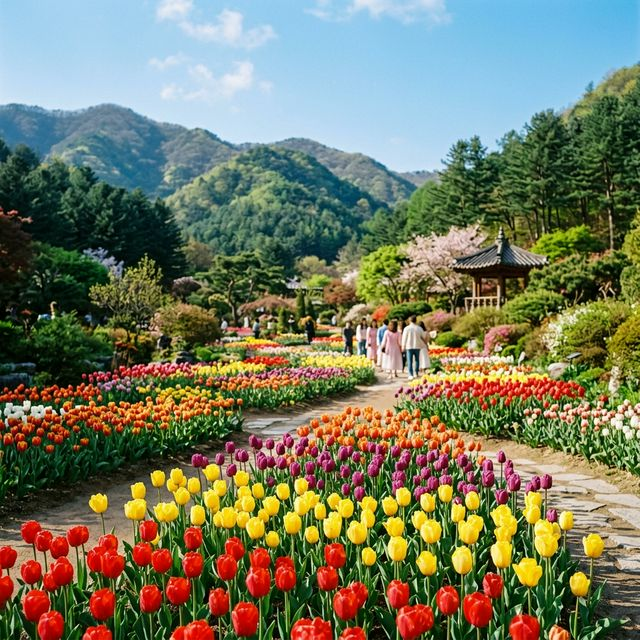
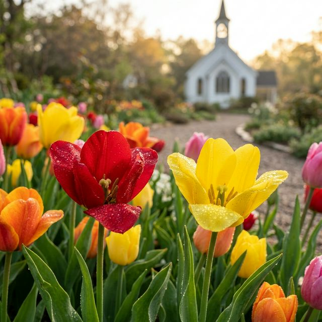
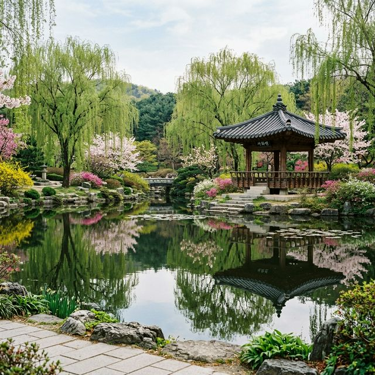

가평 아침고요수목원 봄꽃페스타는 2026년 4월 18일(토)부터 5월 24일(일)까지 약 한 달여 간 진행됩니다. 수목원로를 따라 이어진 산책로마다 철쭉, 수선화, 튤립이
순차적으로 만개하며 시시각각 다른 매력을 뽐내죠. 축제 기간 동안 수목원은 별도의 휴무일 없이 매일 오전 8시 30분부터 오후 7시까지 운영되어 봄날의 정취를 만끽하기에
충분한 시간을 제공합니다.
경기도 가평군 상면에 위치한 이곳은 수도권에서 한 시간 내외로 닿을 수 있는 거리적 이점을 가지고 있습니다. 축제가 한창인 지금, 산등성이는 초록빛 신록으로 물들고 정원 바닥은 오색 꽃대궐로 채워져
그야말로 '무릉도원'이 따로 없는 풍경을 연출하고 있습니다. 특히 올해는 야간 관람이 아닌 주간의 채광을 극대화한 정원 배치가 돋보입니다.
| 행사 명칭 | 아침고요수목원 봄꽃페스타 2026 |
|---|---|
| 축제 기간 | 2026. 04. 18 (토) ~ 05. 24 (일) |
| 관람 시간 | 08:30 ~ 19:00 (입장 마감 18:00) |
| 입장 요금 | 성인 11,000원 / 청소년 8,500원 / 어린이 7,500원 |

봄꽃으로 가득 찬 아침고요수목원 정원 전경 / AI 제작 이미지
현재 아침고요수목원에서 가장 돋보이는 주인공은 단연 하늘 정원과 달빛 정원을 가득 메운 튤립입니다. 4월 하순으로 접어드는 지금, 튤립은 약 90% 이상의 개화율을 보이며
절정의 기량을 뽐내고 있습니다. 수만 송이의 튤립이 줄지어 피어 있는 모습은 마치 네덜란드의 쿠켄호프 축제를 옮겨 놓은 듯한 착각을 불러일으킬 만큼 장관입니다.
튤립의 뒤를 이어 수선화와 철쭉도 기지개를 켜고 있습니다. 보도 근처에 소담스럽게 피어난 수선화는 은은한 향기로 코끝을 자극하며, 산책로 곳곳의 철쭉은 이제 막 꽃망울을
터뜨리기 시작해 5월 초 황금연휴 기간에는 더욱 화려한 색감을 자랑할 것으로 보입니다. 개화 현황은 수목원 공식 홈페이지의 '실시간 꽃 현황' 사진첩을 통해 수시로 확인이 가능하니 방문 전 체크는
필수입니다.
이번 봄꽃페스타의 핵심 포인트는 '하늘길' 구역입니다. 완만한 경사면을 따라 굽이굽이 이어지는 길 양옆으로 식재된 튤립들이 방문객의 시선을 압도하죠. 대충 셔터를 눌러도
'인생샷'이 나오는 이곳은 주말이면 촬영을 기다리는 인파로 북적입니다. 사진 팁을 하나 드리자면, 꽃보다 낮은 각도에서 광각으로 촬영할 경우 튤립 숲속에 들어와 있는 듯한 풍성한 결과물을 얻을 수
있습니다.
또 다른 명당은 '달빛 정원' 끝자락에 위치한 작은 교회 건물 앞입니다. 하얀색 건물을 배경으로 알록달록한 꽃들이 대비를 이루어 웨딩 스냅이나 커플 사진 촬영지로 인기가
높습니다. 오전에 방문하면 건물을 통과하는 부드러운 햇살 덕분에 더욱 부드럽고 따뜻한 감성의 사진을 남길 수 있다는 점도 참고해 보세요.

달빛 정원의 이국적인 풍경과 튤립 / AI 제작 이미지
축제 기간, 특히 주말의 아침고요수목원은 주차와의 전쟁터와 같습니다. 오전 10시 이후에 도착한다면 입구까지 이어진 긴 차량 행렬을 감당해야 할지도 모릅니다. 따라서
가급적 개장 시간인 8시 30분에 맞춰 도착하는 '얼리버드 전략'을 추천합니다. 일찍 도착하면 정문과 가장 가까운 제1주차장에 여유롭게 차를 대고 상쾌한 아침 공기와 함께
한적한 정원을 즐길 수 있습니다.
만약 늦게 도착하여 주차장이 만차일 경우에는 안내 요원의 지시에 따라 근처 임시 주차장을 이용해야 합니다. 주차비 자체는 무료이지만 이동 거리가 상당할 수 있으니 편안한
신발 착용은 필수입니다. 대중교통을 이용하신다면 청평역에서 출발하는 가평군 관광지 순환버스나 수목원 전용 셔틀버스를 활용하는 것이 교통 체증 스트레스를 줄이는 현명한
방법입니다.
꽃 구경으로 다리가 조금 피로해졌다면 한국 정원의 미학을 고스란히 담은 '서화연'으로 향해 보십시오. 연못 정자 위에 앉아 잔잔한 물결을 보고 있으면 복잡했던 마음이
차분히 가라앉는 것을 느낄 수 있습니다. 정자 주변으로는 수양버들과 붓꽃들이 어우러져 동양적인 미의 정점을 보여주는데, 이는 튤립 정원의 화려함과는 또 다른 고즈넉한 매력을 선사합니다.
서화연 인근의 전통 찻집 '도원'에서는 수목원에서 직접 기른 꽃과 자재로 만든 쌍화차나 대추차를 즐길 수 있습니다. 창밖으로 펼쳐진 꽃길을 바라보며 마시는 따뜻한 차 한
잔은 아침고요수목원 여행의 백미라 할 수 있죠. 꽃샘추위에 대비해 준비된 따뜻한 온돌방 좌석도 마련되어 있어 남녀노소 누구나 만족할 만한 휴식처가 되어줍니다.
올해 봄꽃페스타에는 단순히 꽃을 감상하는 것을 넘어 정원 가꾸기의 즐거움을 직접 체험해 볼 수 있는 '원예 클래스'가 신설되었습니다. 주말마다 선착순으로 진행되는 이
클래스에서는 튤립 구근 심기나 압화 액자 만들기 등 아이들과 함께하기 좋은 프로그램들이 운영됩니다. 전문가의 지도를 받으며 나만의 미니 정원을 만들어 보는 경험은 아이들에게 잊지 못할 추억이 될
것입니다.
또한, 수목원의 역사와 꽃에 얽힌 흥미로운 이야기를 들려주는 '가든 도슨트 투어'도 놓치지 마세요. 매일 2회 운영되는 이 투어는 수목원 설립 배경부터 각 정원의 디자인
의도까지 심도 있게 다룹니다. 무심코 지나쳤던 잡초나 작은 꽃들에 숨겨진 비밀을 알고 나면, 정원을 바라보는 시선이 한층 더 깊어지는 것을 경험할 수 있습니다.

고즈넉한 서화연의 봄 풍경 / AI 제작 이미지
가평 여행에서 뺄 수 없는 별미는 바로 가평 잣 닭갈비입니다. 수목원 입구 근처에는 수많은 닭갈비 전문점들이 줄지어 있는데요. 숯불에 구워 불향이 살아있는 숯불 닭갈비부터
푸짐한 채소와 함께 볶아 먹는 철판 닭갈비까지 취향대로 골라 즐길 수 있습니다. 특히 가평의 특산물인 잣이 듬뿍 들어간 닭갈비는 고소한 풍미가 일품입니다.
가벼운 간식을 원하신다면 수목원 내 베이커리 '아침봄빵집'을 추천합니다. 매일 아침 구워내는 천연 발효종 빵들은 건강하면서도 담백한 맛으로 정평이 나 있습니다. 정원을
산책하며 즐기는 갓 구운 빵과 커피 한 잔은 소소하지만 확실한 행복을 전해줍니다. 식사 후에는 수목원로를 따라 조성된 예쁜 카페들을 방문해 가평의 운치를 더 깊게 느껴보시는 것도 좋습니다.
수목원 지형 특성상 경사가 있는 구간이 많으므로 반드시 편한 운동화를 신으셔야 합니다. 또한 축령산 자락이라 평지보다 기온이 낮고 바람이 강할 수 있으니 얇은 겉옷이나
스카프를 준비하는 것이 현명합니다. 정원 곳곳에 그늘이 부족한 구역이 있으니 자외선 차단제와 양산도 챙기시길 바랍니다.
반려동물 동반은 원칙적으로 금지되며, 돗자리나 개인 도시락의 반입 및 취사 행위도 수목원 관리 규정상 엄격히 제한됩니다. 쾌적한 관람 환경 조성을 위해 음식물은 수목원 내
식당가나 근처 맛집을 이용해 주시길 당부드립니다. 스마트폰 배터리가 생각보다 빨리 소모될 수 있으니 대용량 보조 배터리도 잊지 말고 챙겨보세요.
마지막으로 드리는 팁은 '역순 관람'입니다. 대부분의 인파가 입구 근처의 분재 정원부터 관람을 시작하기 때문에, 입장하자마자 가장 안쪽에 있는 서화연이나 달빛 정원 쪽으로
먼저 이동하면 훨씬 여유롭고 한적하게 사진을 촬영할 수 있습니다. 붐비는 시간대를 피한 나만의 동선 설계로 더욱 쾌적한 꽃구경을 즐겨보시길 바랍니다.
또한, 수목원 퇴장 시 입구 근처의 '가드닝 샵'에 들러보세요. 수목원에서 보았던 예쁜 꽃들의 씨앗이나 미니 화분들을 저렴한 가격에 구매할 수 있습니다. 수목원에서의
감동을 집에서도 이어갈 수 있는 좋은 기념품이 될 것입니다. 2026년의 찬란한 봄을 가평 아침고요수목원에서 아름답게 수놓으시길 응원합니다.